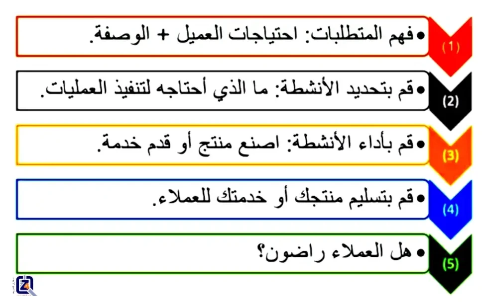

نظام إدارة الجودة
ما هو نظام إدارة الجودة؟
دعونا نشرح لكم المعنى والتعريفات والاستراتيجيات الخاصة بنظام إدارة الجودة بأقصر وأبسط ما يمكن.نظرة عامة على نظام إدارة الجودة:

تخيل لدقيقة أنك قررت أن تبدأ مطعمًا للبيتزا خاصًا بك.
تخيل لدقيقة أنك قررت أن تبدأ مطعمًا للبيتزا خاصًا بك. فلا يهم مبدئيًا إذا اخترت تشغيله بمفردك، أو إذا اشتريت له حق امتياز. فأيًا كان مطعم البيتزا، سيحتاج على سبيل المثال، تحضير بيتزا بالسجق في جميع الأحوال إلى سجق وجبن وصلصة وعجينة البيتزا. ومع ذلك، وبرغم المكونات الأساسية المعروفة، فأنت عندما تذهب إلى مطاعم بيتزا مختلفة، ستشعر دائمًا بفروقات. ظاهريًا، ستجد دائمًا البيتزا متشابهة، لكن اعتمادًا على مطعم البيتزا الذي تزوره، يمكن أن تكون بعض المكونات و/أو الوصفات مختلفة.
إذن يمكن القول، أن لكل مطعم بيتزا طريقته الخاصة في القيام بالأشياء. ربما تكون طريقة تجميع مكونات البيتزا مختلفة، أو طريقة أخذ الطلب، أو سرعة التعامل معه وتوصيله. وهذه هي الحقيقة، فقد قام كل مطعم بيتزا، كل على طريقته الخاصة، بوضع طرق خاصة به للقيام بالأشياء (العمليات)، لضمان تحديد، وفهم، وتنفيذ عملية الوفاء بطلب لبيتزا بالسجق من أحد العملاء، بشكل يمكن تنفيذه بواسطة العاملين بالمطعم.
"يوجد أنشطة محددة لإكمال استلام الطلب، وإعداد، وتسليم البيتزا المطلوبة."
في حالة العمل بحق الامتياز من شركة شهيرة للبيتزا، قد تكون الأنشطة الرئيسية محددة لك مسبقًا (موحدة). أما في حالة مطعمك الخاص، فستكون الأنشطة والعمليات ذاتية التطوير (من تصميمك).
إذن ما هو نظام إدارة الجودة؟
"نظام إدارة الجودة: الطريقة التي تمارس بها الأعمال."
جميع الأنشطة (العمليات) التي يحددها مطعم البيتزا لضمان حصول العميل على ما يطلبه، هي في الواقع ما نسميه: نظام إدارة الجودة. قد تسميها أنت "الطريقة التي نؤدي بها أعمالنا" وهذا أيضًا صحيح تمامًا. وبذلك يعد نظام إدارة الجودة جزءًا أساسيًا من الحياة اليومية لأي عمل تجاري، لكن معظم الناس لا يسمونه بهذا المصطلح.
"لكن ما هي الجودة من الأساس؟ الجودة هي عندما يلبي المنتج احتياجات ومتطلبات العملاء، مما يؤدي إلى نيل رضاهم"، أو، الجودة هي: "جميع الأنشطة التي تقوم بها الشركة، لضمان أن المنتج يلبي احتياجات العملاء". لذلك يمكننا أن نقول أن:
يتم تبني أنظمة إدارة الجودة لضمان رضا العملاء في النهاية. لذلك يمكن لكل شركة أن تبتكر الوصفة الخاصة بها لتحقيق هذا الهدف، أو ما نطلق عليه "النجاح". عند وضع وصفة للنجاح، عليك أن تقرر أنت كيف سيتم بناء نظام إدارة الجودة الخاص بك أنت.
فأنت الذي يحدد العمليات التي تساعدك على تقديم منتجك أو خدمتك بطريقة متسقة، والتي تلبي في نفس الوقت المتطلبات المحددة. على سبيل المثال، في مطعم البيتزا، قد يكون لديك الخطوات التالية عند التعامل مع أحد الطلبات:

مثال على نظام إدارة الجودة.
أهم ما يجب معرفته عن نظام إدارة الجودة:
غالبًا ما يرتبط نظام إدارة الجودة بامتلاك نظام للوثائق (مستندات مكتوبة)، تشمل الإجراءات وتعليمات العمل والنماذج وما إلى ذلك. قد تكون في شكل رقمي أو مطبوع. هذه (الوثائق) هي أحد مكونات نظام إدارة الجودة، ولكنها ليست أهم مكوناته. في حالة مطعم البيتزا، يمكننا القول بأن كل الوثائق التي تحتاجها هي: وصفات للبيتزا، وطريقة واضحة لتنفيذ رغبات الزبائن "الخاصة"، (مثل الصلصة الخفيفة، أو الجبن الإضافي، وما إلى ذلك).
"باختصار، أنت تقرر ما يصلح لشركتك، وكيف تنشئ نظام إدارة الجودة، الذي هو طريقتك في القيام بالأشياء."
حافظ على بساطة نظام إدارة الجودة الخاص بك:
عند إنشاء نظام إدارة الجودة الخاص بك، اجعله بسيطًا. فقد وجدنا أن العديد من الشركات والمؤسسات لا تتمكن من تطبيق نظام إدارة الجودة، ببساطة بسبب التعقيد المفرط للإجراءات المفروضة، وبذلك يصبح نظام إدارة الجودة في شركتك كطائرة نفاثة، لكنها لا تطير أبدًا في السماء. لذلك نصيحتنا دائمًا إبدأ بسيطًا وانمو مع نمو عملك.
إبدأ الآن مع مستشاري نظام إدارة الجودة المحترفين، فنحن هنا لمساعدتك في نيل المزيد من رضاء العملاء.
إذا كنتم مهتمين بإنشاء، أو إعادة صياغة، أو تقييم نظام إدارة الجودة الخاص بكم، فتفضلوا بالتواصل معنا اليوم،
بإرسال بريدًا إلكترونيًا على العنوان التالي:
support@the4z.com